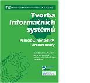
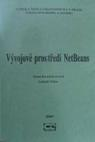
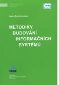
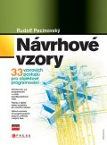

4IT115 - Softwarové inženýrství
ZS 2017/2018
=> Akreditace kurzu, zařazení do skupin
1. Cíl předmětu
- Cílem předmětu je podat základní představu o disciplíně softwarové inženýrství se zaměřením na vývoj nového programového systému.
- Předmět je od ZS 2015/2016 koncipován tak, že předpokládá předchozí absolvování programovacího kurzu (4IT101 Programování v Javě nebo 4SA201 Programování ve Visual Basic) a kurzu 4IT218 Databáze.
Přednášky jsou zaměřeny na jednotlivé fáze vývoje s důrazem na fázi návrhu a implementace programových systémů. Na cvičeních si studenti prakticky prohloubí znalosti OOP v Javě v oblasti vytváření grafického uživatelského rozhraní v JavaFX. Dále si osvojí základní principy objektově orientovaného návrhu, některé návrhové vzory a některé programovací techniky jako refaktoring, test driven development ap. Studenti se seznámí s jazykem UML a naučí se vytvářet use case diagram, diagram tříd, sekvenční diagram a activity diagram. Prakticky si vyzkouší práci se systémem na správu verzí. Při práci v týmu poznají problémy, se kterými se mohou ve vývojářské praxi setkat.
2. Požadované vstupní znalosti
Studenti by měli studovat předmět Softwarové inženýrství po absolvování předmětu Programování (v Javě 4IT101 nebo ve Visual Basicu 4SA201 ) a předmětu Databáze 4IT218.
3. Podmínky pro absolvování předmětu
| Úloha | Maximální počet bodů | Minimální počet bodů |
|---|
| Odevzdání a obhájení první semestrální úlohy | 15 | 7.5 |
| Vytvoření a obhájení designového modelu pro druhou semestrální úlohu | 15 | 7.5 |
| Implementace týmového projektu druhé semestrální úlohy včetně průběžné práce s úložištěm Subversion | 15 | 7.5 |
| Test UML | 8 | 4 |
| Závěrečný test pokud student nedosáhne minimálního počtu bodů za test, anebo má výsledek předmětu 4+ má možnost 1 opravy testu | 30 | 10 |
| Účast na cvičeních, předpokládá se pravidelná účast na cvičeních, pokud se student bez řádné omluvy doložené dokladem neúčastní více jak 3 cvičení, strhává se mu za každé nenavštívené cvičení 1 bod,nutná je účast na cvičeních, kde se obhajuje a prezentuje řešení | | |
| Průběžné testy z látky z přednášek (10 testů) | 10 | 5 |
| Samostatná práce v průběhu semestru ( domácí úkoly, aktivita na cvičeních) | 7 | |
| Celkem | 100 | |
|---|
Výsledná známka je určena na základě bodového hodnocení:
| Známka | Součet bodů |
|---|
| 1 | 90-100 |
| 2 | 75-89 |
| 3 | 60-74 |
| 4+ | 50-59 |
| 4 | 0-59 |
4. Harmonogram přednášek
| Týden | Přednáška | Přednášející | Datum |
|---|
| 1. | Místo předmětu v rámci bakalářského studia,požadavky na ukončení předmětu, zdroje
Subversion - nástroj na správu verzí | Buchalcevová,Ženíšek | 18.9. |
| 2. | Grafické uživatelské rozhraní v JavaFX - 1.část | Pecinovský | 25.9. |
| 3. | Grafické uživatelské rozhraní v JavaFX - 2.část | Pecinovský | 2.10. |
| 4. | SW inženýrství – stav a vývoj,UML přehled,
základní funkcionalita CASE nástroje Astah,
Use Case diagram | Buchalcevová | 9.10. |
| 5. | Diagram tříd UML,
Sekvenční diagram, Activity diagram | Buchalcevová | 16.10. |
| 6. | Procesy při vývoji SW, modely životního cyklu
Metodiky pro vývoj SW, kategorizace | Buchalcevová | 23.10. |
| 7. | Návrhové vzory | Pecinovský | 30.10. |
| 8. | Připojení k databázi v Javě, podrobně JDBC, přehledově Java persistence API, Hibernate | Pecinovský | 6.11. |
| 9. | Integrační server Jenkins, kontinuální integrace Deployment | Ženíšek | 13.11. |
| 10. | Metodika RUP, OpenUP, MMSP | Buchalcevová | 20.11. |
| 11. | Agilní metodiky pro vývoj SW - Scrum, XP, Kanban | Buchalcevová | 27.11. |
| 12. | Řízení kvality při vývoji SW | Buchalcevová | 4.12. |
| 13. | Softwarová architektura, architektonické vzory
Komponentový vývoj,
architektura orientovaná na služby (SOA) | Buchalcevová | 11.12. |
5. Harmonogram cvičení
je uveden na stránkách jednotlivých cvičících
6. Literatura k předmětu
BRUCKNER, Tomáš, VOŘÍŠEK, Jiří, BUCHALCEVOVÁ, Alena, STANOVSKÁ, Iva, CHLAPEK, Dušan, ŘEPA, Václav. Tvorba informačních systémů. 1. vyd. Praha : Grada Publishing, 2012. 357 s. ISBN 978-80-247-4153-6.

BUCHALCEVOVÁ, Alena, STANOVSKÁ, Iva. Příklady modelů analýzy a návrhu aplikace v UML. 1. vyd. Praha : Oeconomica, 2013. 198 s. ISBN 978-80-245-1922-7.
BUCHALCEVOVÁ, Alena, Pitka Lukáš. Vývojové prostředí NetBeans. 1. vyd. Praha : Oeconomica, 2007. ISBN 978-80-245-1206-8

Buchalcevová, Alena. Metodiky budování informačních systémů. Oeconomica. 2009. ISBN 978-80-245-1540-3

PECINOVSKÝ, Rudolf. Návrhové vzory. Computer Press. 2007
